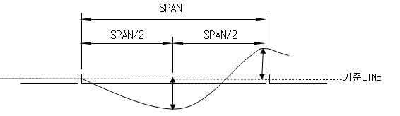

-
-
-
기준상세
| 구분 |
기준 |
측정값 |
판정결과 |
| 진직도 |
L/500 |
L/1200 |
|
| 역캠버 |
L/500 |
L/1200 |
|
| 단차 |
L/500 |
L/1200 |
|
| span |
L/500 |
L/1200 |
|
점검기준
| NO |
검사항목 |
검사방법 |
허용오차 |
| 1 |
SPAN |
|
SPANx(1/1000)
이내 |
| 2 |
좌우RAIL의
수평차 |
| 3 |
GIRDER진직도
(좌우방향의 굽힘) |
 |
1/500 |
| 4 |
GIRDER굴곡도
(상하방향의 굽힘) |
|
- 1
- 2
- 3
- 4
- 5
- 6
- 7
- 8
- 9
- 10
- 11
- 12
- 13
- 14
- 15
- 16
- 17
- 18
- 19
- 20
- 21
- 22
- 23
- 24
- 25
- 26
- 27
- 28
- 29
- 30
- 31
점검
| 날짜 |
항목 |
균열 |
볼트 |
보수불가 |
| 유형 |
위치 |
CRG |
BG |
Colume |
풀림 |
절손 |
풀림 |
절손 |
| 2016.08.08 |
4 |
C/G 상부 수직 스티프너와 웨브 접합부 |
- |
0.10 |
- |
- |
- |
- |
- |
| 2016.08.08 |
27 |
B/G 삼현재와 수직가세트 플례이트 접합부 |
- |
- |
- |
- |
20 |
- |
- |